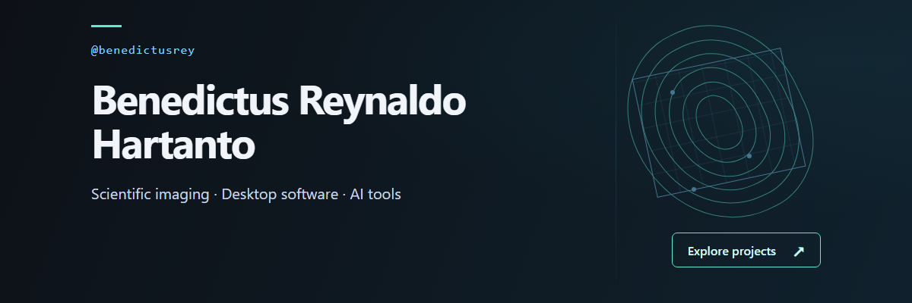
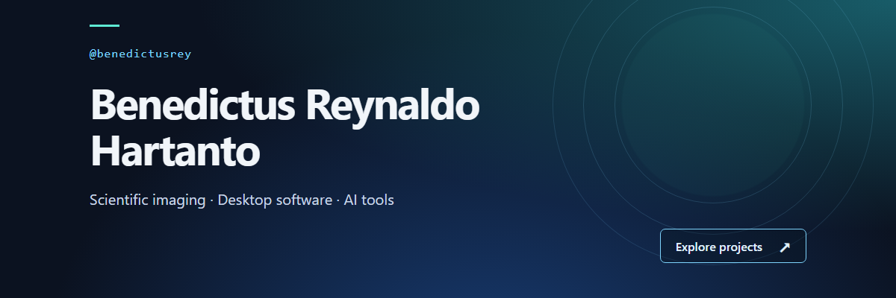
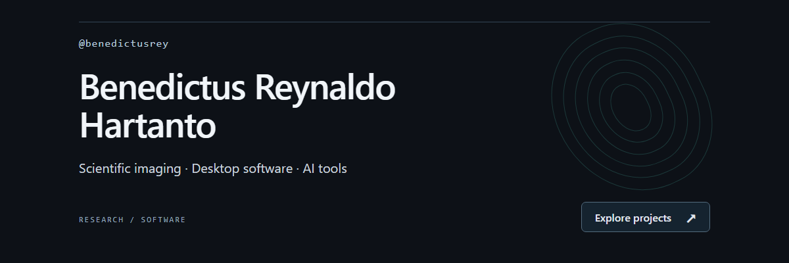

01 / Geometric — selected
Wood structure meets scientific imaging.

02 / Gradient
A softer, contemporary technology direction.

03 / Editorial
A restrained, research-led composition.

Wood structure meets scientific imaging.

A softer, contemporary technology direction.

A restrained, research-led composition.